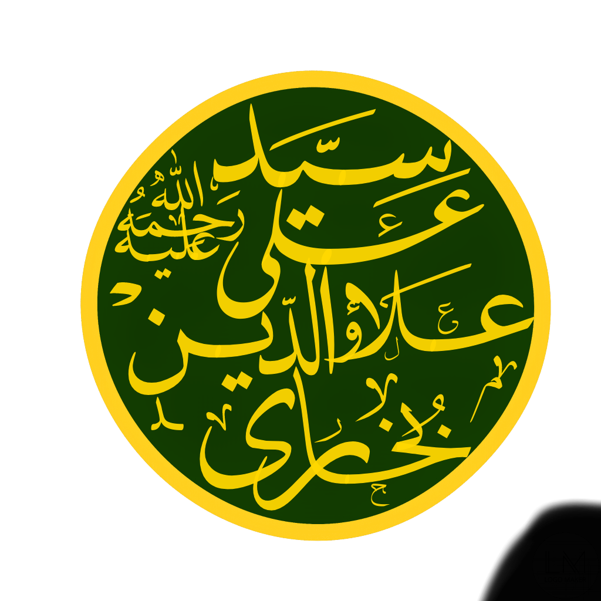

As-Sayyid Abul Hassan Ali Allauddin Bukhari
السيد ابوالحسن علي علأؤالدين بخاري

Syed Ali Allaudin (khansahib) Razvi Al-Bukhari (c. 1610 c. 1671) popularly known as "Khan Seab". Syed Ali Allaudin (khansahib) Bukhari was born in 1018(AH) to Syed Saif-ud-Din (khansahib) Razvi Al-Bukhari, And they left this world in 14 Dhul Qadah 1081(AH). Syed Ali Allaudin (Khansahib) Bukhari, was the disciple of Hazrat Baba Naseeb-ud-Din Ghazi (Disciple of Hamza Makhdoom). He practiced the spiritual teachings in the orders of Baba Naseeb-ud-Din Ghazi.
Syed Ali Alauddin's shrine is located in the village of Chewdara, it is 150 m far away from Jamia Masjid Shareef Chewdara (B). Which is about only 1minute of walk to reach this location. From tehsil beerwah it is the distance of 3.3 km.